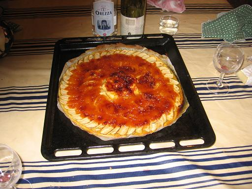

Recette
n°98
: tarte fine aux pommes et
à la gelée d’arbouse

Ingrédients : (pour 4
personnes)
- 4 grosses pommes plutôt tendres
- 4 cuillers de gelée d’arbouses
- 4 cuillers de sucre en poudre
- un verre d'eau
- une pâte à tarte brisée type Marie
Préparation :
- mettre le four à préchauffer à 220C
- dérouler la pâte à tarte et la mettre sur la
plaque du four en lui conservant
son papier en dessous
- piquer la pâte à la fourchette pour éviter
qu’elle ne gonfle
- faire
fondre la confiture dans l'eau en chauffant à feu doux pour
obtenir un sirop, puis réserver
- éplucher et vider les pommes
- les couper en deux dans le sens vertical et les mettre dans une
bassine d'eau froide afin qu'elles ne s'oxydent pas
- quand toutes les demi-pommes sont prêtes, les trancher en
lamelles de 5 mm d'épaisseur environ
- disposer les lamelles en cercles concentriques en les faisant de
recouvrir partiellement
- alterner le sens de recouvrement d'un cercle à l'autre (cf.
photo)
- arroser du sirop et
compléter en saupoudrant du sucre les
endroits où le sirop n'est pas allé
- enfourner à
four chaud et cuire 20 à 25 mn
Observations :
- recette préparée le 28 octobre à Porticcio.
Excellente.